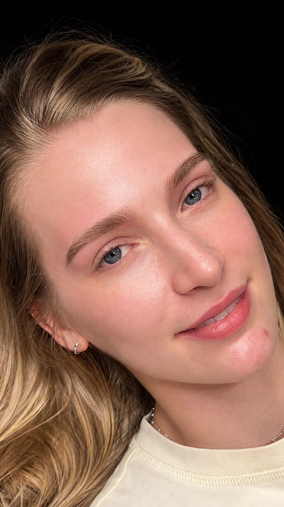

Micropigmentação de sobrancelhas
Técnica Shadow. Micropigmentação com efeito sombreado e esfumado, que preenche e define a sobrancelha com a suavidade de uma maquiagem.
O que você ganha
- Efeito sombreado e esfumado, com aparência de maquiagem suave
- Falhas preenchidas com acabamento natural
- Formato e pigmento escolhidos para o seu rosto e o seu tom de pele
- Mais praticidade na sua rotina
Ideal para quem tem
FalhasSobrancelhas ralasAssimetriaPouco
tempo para se maquiar
Quero
agendar